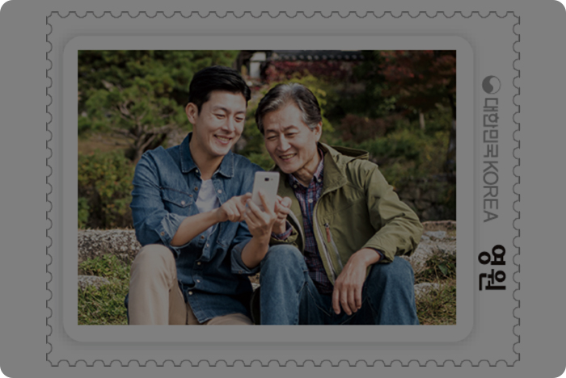

희망을 전해줘
나는 믿어. 너는 언젠가 꼭 너의 꿈을 찾고 또 다른
누군가에게는 희망을 주는 사람이 될 거야. 난 그렇게 믿어.
본 목소리 우표 내용은 2021년 대한민국 편지쓰기 공모전 수상작에서
각색한 내용과 한국우편사업진흥원 직원들의 재능기부로 만들어 졌습니다.
나는 믿어. 너는 언젠가 꼭 너의 꿈을 찾고 또 다른
누군가에게는 희망을 주는 사람이 될 거야. 난 그렇게 믿어.
본 목소리 우표 내용은 2021년 대한민국 편지쓰기 공모전 수상작에서
각색한 내용과 한국우편사업진흥원 직원들의 재능기부로 만들어 졌습니다.